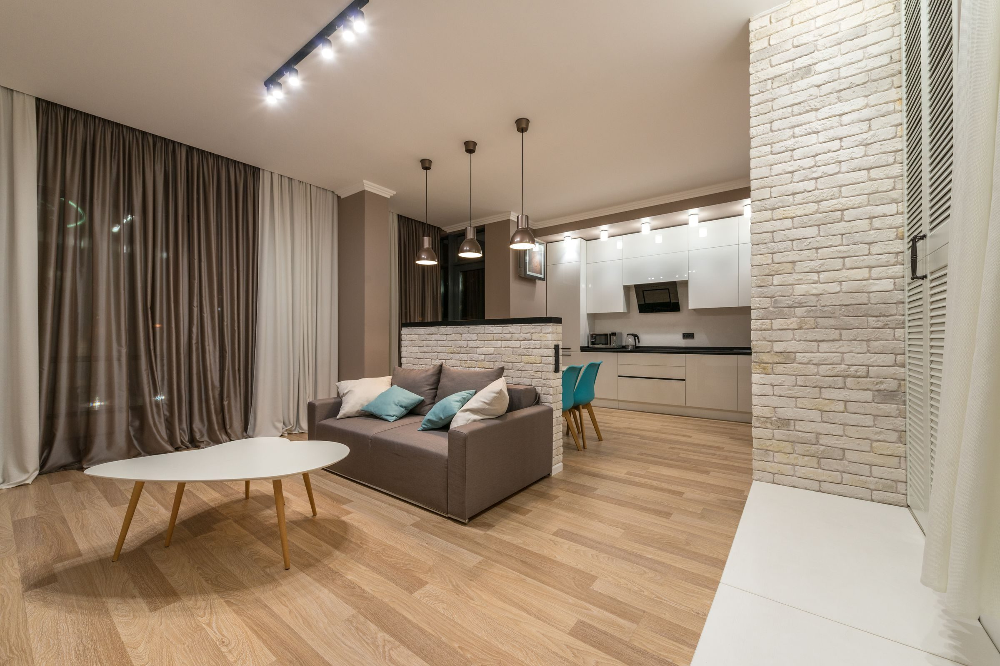

Ogrzewanie podłogowe wodne · Zielona Góra
Montaż ogrzewania podłogowego w Zielonej Górze
Układamy podłogówkę w domach i mieszkaniach: od izolacji i pętli rur po rozdzielacz. Każdą instalację sprawdzamy pod ciśnieniem, zanim wejdzie ekipa od wylewki.
- 5,0 w Google · 21 opinii
- Wycena bez opłat

Z naszych budów
Tak wygląda podłogówka, zanim zniknie pod wylewką
Rury trzymają równy rozstaw, taśma brzegowa biegnie przy ścianach, a pętle prowadzimy tak, żeby ciepło rozchodziło się równo.


Zakres prac
Co wchodzi w montaż ogrzewania podłogowego
Robimy całą warstwę grzewczą podłogi. Po nas wchodzi ekipa od wylewki, a potem posadzka: płytki, panele albo deska.
Izolacja pod rurami
Na styropian kładziemy folię z siatką. Ciepło idzie w górę, do pokoju, a siatka pomaga trzymać równy rozstaw rur.
Taśma brzegowa
Biegnie wzdłuż każdej ściany i daje wylewce miejsce na pracę, kiedy podłoga się nagrzewa.
Pętle rur
Układ ślimakowy albo meandrowy, rozstaw dobrany do pomieszczenia. W łazience rury idą gęściej niż w sypialni.
Rozdzielacz
Każda pętla ma własne wyjście, więc każde pomieszczenie da się ustawić osobno.
Próba ciśnieniowa
Przed wylewką instalacja stoi pod ciśnieniem. Sprawdzamy szczelność każdego połączenia.
Podłączenie do źródła ciepła
Rozdzielacz łączymy z kotłem albo innym źródłem ciepła, które masz w domu.

Jak pracujemy
Od telefonu do wylewki w czterech krokach
Rozmowa
Mówisz, ile metrów i jakie pomieszczenia. Pytamy o źródło ciepła i termin wylewki.
Bezpłatna wycena
Cenę znasz przed rozpoczęciem prac, a nie po nich.
Dobór materiałów
Pomagamy dobrać rury, izolację i rozdzielacz, żeby instalacja działała latami.
Montaż i próba
Układamy pętle, podłączamy rozdzielacz i robimy próbę ciśnieniową. Potem wchodzi wylewka.
Ciepło od podłogi, ściany wolne od grzejników
Meble stawiasz, gdzie chcesz, a podłoga grzeje równo w całym pokoju. Najprzyjemniej czuć to boso, zwłaszcza w łazience.
Opinie
Co piszą klienci
„Bardzo polecam Pana Filipa. Ogrzewanie podłogowe zostało wykonane sprawnie, czysto i przede wszystkim w ustalonym terminie. Wszystko działa bez zarzutu, a kontakt z wykonawcą był bezproblemowy na każdym etapie prac.”
„Prace zostały wykonane zgodnie z ustaleniami, dokładnie (…). Pan Filip wykazał się dużą wiedzą i pomógł nam dobrać odpowiedni sprzęt. (…) Instalacja została przetestowana.”
„Z czystym sumieniem polecam! Fachowa obsługa, szybka realizacja i wszystko zrobione jak należy. Widać, że Pan zna się na rzeczy (…). Bardzo dobry kontakt i uczciwe podejście.”
Pytania
Najczęstsze pytania o ogrzewanie podłogowe
Nie ma tu Twojego pytania? Zapytaj przez telefon, odpowiemy od razu.
Kontakt i wycenaIle kosztuje montaż ogrzewania podłogowego?
To zależy od metrażu, liczby pomieszczeń i etapu budowy. Wycena jest bezpłatna: podaj przez telefon metraż i opowiedz, co już jest zrobione. Jeśli masz rzut domu, miej go pod ręką, wtedy wycena jest dokładniejsza.
Na jakim etapie budowy zamówić podłogówkę?
Po tynkach i instalacji elektrycznej, a przed wylewką. Odezwij się z wyprzedzeniem, wtedy łatwiej zgrać termin montażu z ekipą od wylewek.
Czy podłogówkę da się zrobić w remontowanym mieszkaniu?
Często tak. Decyduje wysokość, jaką można oddać na nowe warstwy podłogi. Po oględzinach mówimy wprost, czy się da i w jakim zakresie.
Pod jaką posadzkę pasuje ogrzewanie podłogowe?
Najlepiej pod płytki i kamień, bo dobrze przewodzą ciepło. Panele i deska też się sprawdzają, jeśli producent dopuszcza je na ogrzewanie podłogowe. Warto to sprawdzić przed zakupem podłogi.
Kto dobiera rury, izolację i rozdzielacz?
Pomagamy dobrać cały system i materiały tak, żeby instalacja działała latami. Przed zakupem wiesz, z czego będzie zrobiona Twoja podłogówka.
Czy instalacja jest sprawdzana przed wylewką?
Tak. Po ułożeniu pętli robimy próbę ciśnieniową i dopiero szczelną instalację oddajemy ekipie od wylewki.
Jaki jest obszar dojazdu?
Pracujemy w Zielonej Górze i okolicy. Przy większych budowach jeździmy też dalej: po województwie lubuskim, wielkopolskim i dolnośląskim.
Kto prowadzi montaż
Filip Jędrzejewski, instalator z Zielonej Góry
Filip pomaga dobrać system i materiały, pilnuje montażu i próby ciśnieniowej. W opiniach klienci chwalą przede wszystkim kontakt i dotrzymane terminy.
Zadzwoń, zanim wejdzie wylewka
+48 602 440 237Wycena jest bezpłatna. Przygotuj metraż i, jeśli masz, rzut domu.